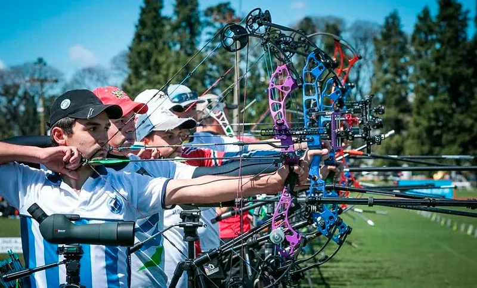
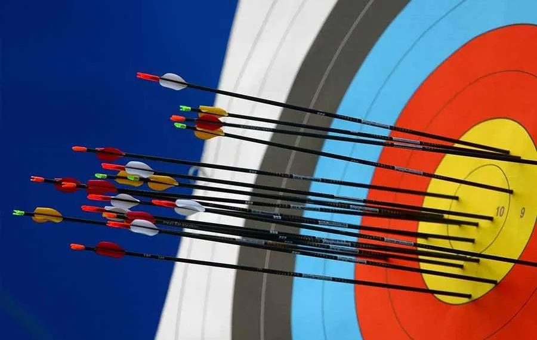
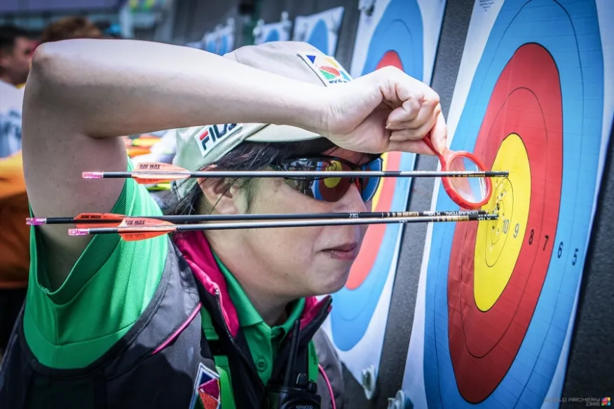
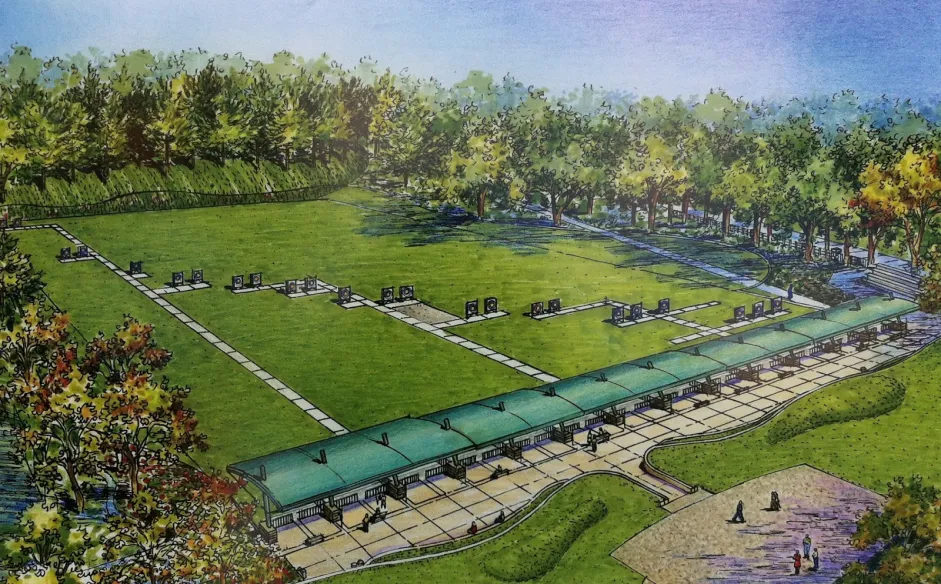

Noticias
Calendario de Competencia

Aquí puedes ver el calendario completo de nuestras competencias. En este calendario se incluyen todos los partidos, fechas y horarios de las competiciones organizadas por nuestra liga interna. Cada encuentro tiene su respectivo día y hora, por lo que te sugerimos estar atento a las actualizaciones que podrían surgir durante la temporada. El calendario también muestra las diferentes fases del torneo, incluyendo los octavos de final, cuartos de final, semifinales y la gran final.
Recuerda que las competiciones se actualizan semanalmente, y cualquier cambio será informado con suficiente antelación. Para más información, sigue revisando nuestras actualizaciones diarias y permanece al tanto de los eventos importantes. La planificación está diseñada para que todos los equipos puedan tener el tiempo necesario de preparación antes de cada partido.
Nuestra Liga Interna

La Liga Interna está formada por equipos locales que compiten entre sí en una serie de partidos organizados cada mes. El objetivo de la liga es fomentar el compañerismo, la competencia sana y el desarrollo del talento en cada uno de los jugadores que participan. Todos los equipos están compuestos por jugadores de nuestra comunidad, y los partidos se juegan en nuestras instalaciones deportivas.
Los jugadores tienen la oportunidad de mejorar sus habilidades mientras disfrutan de un ambiente competitivo pero amistoso. Cada equipo es evaluado semanalmente para asegurar un buen desempeño y se otorgan premios al final de cada temporada para reconocer el esfuerzo y la dedicación.
Criterios de Competición

Los criterios de competición son estrictos y están diseñados para asegurar que cada partido sea jugado con el máximo nivel de integridad y espíritu deportivo. Entre los criterios más importantes se encuentran el respeto entre los jugadores, la puntualidad en los partidos, y el cumplimiento de las reglas del juego establecidas por los organizadores.
Cada jugador debe estar familiarizado con las reglas antes de comenzar a jugar. Los árbitros están entrenados para hacer cumplir estas reglas de manera imparcial, y cualquier incumplimiento puede resultar en sanciones, desde amonestaciones hasta la descalificación del torneo, dependiendo de la gravedad del incidente.
Instalaciones

Nuestras instalaciones deportivas están diseñadas para ofrecer la mejor experiencia a todos los participantes y espectadores. Contamos con campos de fútbol de césped natural, canchas de baloncesto, pistas de atletismo, y mucho más. Cada espacio está equipado con todas las comodidades necesarias, como vestuarios, áreas de descanso, y gradas para los espectadores.
El mantenimiento de las instalaciones es una de nuestras prioridades, y constantemente estamos trabajando para asegurarnos de que cada área esté en perfectas condiciones para su uso. Además, ofrecemos alquiler de espacios para eventos especiales y torneos externos.